vLLM architecture
and API servingАрхитектура vLLM
и API-сервинг
From a local model to an observable OpenAI-compatible service contract.
От локальной модели к наблюдаемому сервисному контракту, совместимому с OpenAI.

The client sees an HTTP contract. Behind it, tokenization, scheduling, model workers and GPU kernels form the service.
Клиент видит HTTP-контракт. За ним токенизация, шедулинг, воркеры модели и GPU-ядра образуют сервис.
HTTP succeeds. The ticket goes to the wrong team.HTTP успешен. Тикет уходит не в ту команду.
One classifier investigationОдно расследование классификатораExpectedОжидание
Login works, but Save loses edits. Route this ticket to bug.Вход работает, но Save теряет правки. Отправьте тикет в bug.
Actual Qwen resultРеальный результат Qwen
access: valid format, wrong meaning. Separately, a partial correct-looking label must not count as success.access: формат валиден, смысл неверен. Отдельно: частичная правдоподобная метка не считается успехом.
Four boundaries, four kinds of evidence
Четыре границы, четыре рода свидетельств
Request lifecycleЖизненный цикл запроса| BoundaryГраница | QuestionВопрос | ProbeПроба |
|---|---|---|
| client → HTTPклиент → HTTP | route, timeout, auth?маршрут, таймаут, auth? | status + request IDстатус + request ID |
| HTTP → templateHTTP → шаблон | valid chat messages?валидные chat-сообщения? | rendered tokensотрендеренные токены |
| template → engineшаблон → движок | admitted and queued?допущен и в очереди? | limits + queueлимиты + очередь |
| worker → GPUворкер → GPU | model/kernel healthy?модель/ядро здоровы? | logs + device traceлоги + трасса устройства |
Three skills for a useful ML serviceТри навыка для полезного ML-сервиса
Inspectable student resultsПроверяемые результаты студентаFrom model computation to useful predictionsОт вычислений модели к полезным предсказаниям
Seven turnsСемь витковA server is ready when the client contract has been probed—not when the process has merely started.Сервер готов, когда клиентский контракт проверен пробами, — а не когда процесс просто запущен.Architecture today; scheduling internals next
Сегодня архитектура; внутренности шедулинга — дальше
ScopeОбъёмWe name the scheduler and KV allocator so requests can be traced. Topic 05 derives PagedAttention and continuous batching; Topic 06 measures the saturation knee under many clients.
Называем шедулер и KV-аллокатор, чтобы запросы можно было трассировать. Тема 05 выводит PagedAttention и непрерывный батчинг; тема 06 измеряет колено насыщения под многими клиентами.
What would you ask the server first?
Что вы спросите у сервера первым?
Pause · 60 secondsПауза · 60 секундWould you restart the GPU worker, list advertised models, change the prompt, or profile a kernel? Choose the least costly discriminating probe.
Перезапустить GPU-воркер, вывести список объявленных моделей, поменять промпт или профилировать ядро? Выбирайте наименее затратную различающую пробу.
Engine boundaryГраница движка
Separate the API process from model execution.
Отделяйте API-процесс от исполнения модели.
Serve the same ticket classifier as Topic 03Тот же классификатор тикетов, что в Topic 03
Concrete applicationКонкретное применение| TicketТикет | Gold labelЭталон | WhyПочему |
|---|---|---|
| Charged twice; refund duplicateДвойное списание; вернуть дубликат | billing | payment disputeспор о платеже |
| Password reset expiredСрок сброса пароля истёк | access | cannot sign inне входит в систему |
| Login works; Save loses editsВход работает; Save теряет правки | bug | malfunction after loginсбой после входа |
One request crosses four responsibility zones
Один запрос пересекает четыре зоны ответственности
High-level architectureАрхитектура верхнего уровня| ZoneЗона | OwnsВедает | Failure symptomСимптом отказа |
|---|---|---|
| API frontendAPI-фронтенд | HTTP, validation, streamingHTTP, валидация, стриминг | 4xx / broken SSE |
| tokenizer/template | messages → token IDsсообщения → ID токенов | wrong prompt or no chatневерный промпт или нет chat |
| engine/scheduler | admission, live request stateдопуск, живое состояние запроса | queue/limit |
| workerворкер | weights, KV, GPU kernelsвеса, KV, GPU-ядра | OOM/compute error |
NF4 experiment ≠ deployed quantized serviceNF4-эксперимент ≠ квантованный сервис на сервере
Bridge from Topic 03Мост из Topic 03Earlier experimentПрошлый эксперимент
Transformers: FP16 vs bitsandbytes NF4. Compare storage, behavior and execution.Transformers: FP16 против bitsandbytes NF4. Сравните хранение, поведение и исполнение.
Today's controlСегодняшний контроль
Reload pinned Qwen in FP16 under vLLM. Keep the ticket task; test engine integration separately.Перезагрузите запиненный Qwen в FP16 под vLLM. Задача тикетов та же; интеграцию движка проверяйте отдельно.
A clean restart preserves immutable assetsЧистый рестарт сохраняет неизменяемые ресурсы
Bounded operator procedureОграниченный план оператора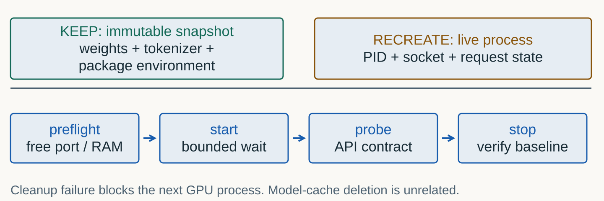
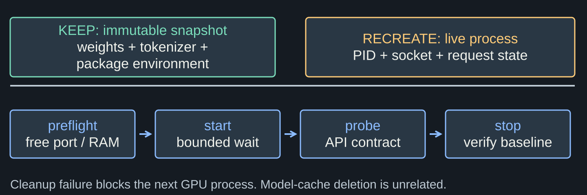
Readiness accumulates evidence at different layersГотовность копит свидетельства на разных слоях
Probe design · no capacity claimПробы · ёмкость не заявляется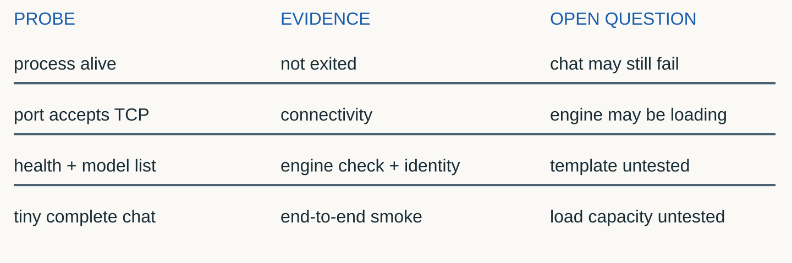
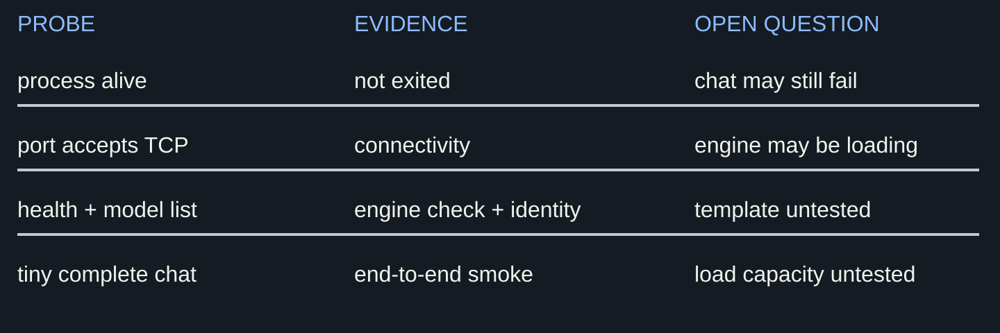
The same Qwen model, now behind an APIТа же модель Qwen, теперь за API
Pinned 0.5B config · not a new modelЗапиненный конфиг 0.5B · не новая модель| QuantityВеличина | ValueЗначение | Serving consequenceСледствие для сервинга |
|---|---|---|
| decoder layers | 24 | KV retained at every layerKV хранится на каждом слое |
| hidden / query headshidden / Q-головы | 896 / 14 | head dimension 64размерность головы 64 |
| KV heads / dtypeKV-головы / dtype | 2 / FP16 | 12 KiB logical KV per token12 KiB логического KV на токен |
| lab context capлимит контекста лабы | 2048 positions | rendered prompt + output reservationотрендеренный промпт + резерв выхода |
What the GPU computes for one requestЧто GPU вычисляет для одного запроса
Logical tensor shapes · pinned Qwen configЛогические формы тензоров · конфиг Qwen![For one sequence with S rendered positions: input IDs [1,S], decoder hidden states [1,S,896], last-position vocabulary logits [1,151936]. Each layer retains K and V of logical shape [1,2,S,64]. Decode consumes one new position and appends one KV position. These are logical shapes, not a physical vLLM memory trace.](assets/figures/t4-ml-forward-light.svg)
![For one sequence with S rendered positions: input IDs [1,S], decoder hidden states [1,S,896], last-position vocabulary logits [1,151936]. Each layer retains K and V of logical shape [1,2,S,64]. Decode consumes one new position and appends one KV position. These are logical shapes, not a physical vLLM memory trace.](assets/figures/t4-ml-forward-dark.svg)
Reveal the observable boundary at each hop
Покажите наблюдаемую границу на каждом хопе
Interactive request path · step with →Интерактивный путь запроса · шаги — кнопкой →Record base URL, model name, timeout and one sanitized payload shape.
Запишите base URL, имя модели, таймаут и одну очищенную форму пейлоада.
Status, request ID, validation error and streaming headers reveal this boundary.
Статус, request ID, ошибка валидации и заголовки стрима выдают эту границу.
Rendered message tokens—not characters—determine context admission.
Отрендеренные токены сообщения — не символы — определяют допуск по контексту.
Admission and queue state decide when the GPU sees work.
Допуск и состояние очереди решают, когда GPU увидит работу.
Weights, KV state and kernels produce logits; failures include OOM and unsupported paths.
Веса, состояние KV и ядра выдают логиты; отказы включают OOM и неподдерживаемые пути.
Prefill and decode change different tensor axesPrefill и decode меняют разные оси тензоров
One sequence · logical shapesОдин запрос · логические формы| StageЭтап | Input positionsВходные позиции | Logical K/V at one layerЛогические K/V на одном слое |
|---|---|---|
| Prefill | S rendered positionsS отрендеренных позиций | [1, 2, S, 64] |
| Next decodeСледующий decode | one new positionодна новая позиция | [1, 2, S+1, 64] |
| Next-token logitsЛогиты следующего токена | one last-position stateсостояние последней позиции | [1, 151936] vocabulary scores[1, 151936] оценки словаря |
A valid label may still route the ticket wronglyВалидная метка может направить тикет неверно
Actual Qwen FP16 · Topic03 TransformersРеальный Qwen FP16 · Topic03 Transformers| Input clueВходная улика | GoldЭталон | Actual outputФактический выход |
|---|---|---|
| Save fails after successful loginSave падает после успешного входа | bug | access |
| Uploaded images appear upside downЗагруженные картинки перевёрнуты | bug | access |
| Duplicate payment needs refundДвойная оплата — нужен возврат | billing | bug |
Model identityИдентичность модели
The URL, served name and checkpoint revision are different identifiers.
URL, обслуживаемое имя и ревизия чекпойнта — разные идентификаторы.
One deployment has several different identitiesУ одного деплоя несколько разных идентичностей
Recorded deployment · vLLM 0.29.0Записанный деплой · vLLM 0.29.0
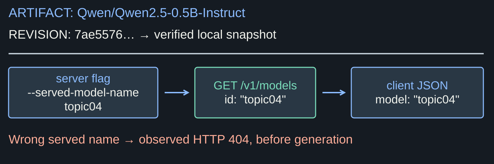
Generation request for a useful taskЗапрос генерации для полезной задачи
Same model · explicit contractТа же модель · явный контракт| FieldПоле | ValueЗначение | PurposeНазначение |
|---|---|---|
| system message | three labels + definitionsтри метки + определения | declare decision boundaryзаявить границу решения |
| user message | literal support ticketбуквальный тикет поддержки | the observation to classifyнаблюдение для классификации |
temperature / max_tokens | 0 / 8 | greedy baseline + bounded outputgreedy-базлайн + ограниченный выход |
structured_outputs.choice | optional three-label listопциональный список трёх меток | constrain strings, not correctnessограничивает строки, не корректность |
| model | topic04 | advertised service identityзаявленная идентичность сервиса |
The client sends the advertised served name
Клиент шлёт объявленное обслуживаемое имя
Frontend contractКонтракт фронтендаSet it explicitly for the lab, list /v1/models, then copy that exact ID into the SDK's model= field. Do not assume the Hugging Face repository ID is automatically the exposed name.
Задайте его явно для лабы, выведите /v1/models и скопируйте этот точный ID в поле model= SDK. Не считайте, что ID репозитория Hugging Face автоматически становится открытым именем.
HTTP envelope and API routeHTTP-конверт и маршрут API
Literal local request boundaryБуквальная локальная граница запроса| FieldПоле | Exact valueТочное значение | RoleРоль |
|---|---|---|
| method | POST | generation requestзапрос генерации |
| URL | http://127.0.0.1:8000/v1/chat/completions | host + routeхост + маршрут |
| Content-Type | application/json | request encodingкодирование запроса |
| body modelмодель в теле | topic04 | advertised identityзаявленная идентичность |
The last hidden state becomes vocabulary logitsСкрытое состояние последней позиции → логиты словаря
A generation step · not three-class softmaxШаг генерации · не трёхклассовый softmaxJSON roles become a model-specific token sequenceРоли JSON превращаются в последовательность токенов
Chat-template mechanism · schematic boundariesМеханизм chat-шаблона · схематичные границы
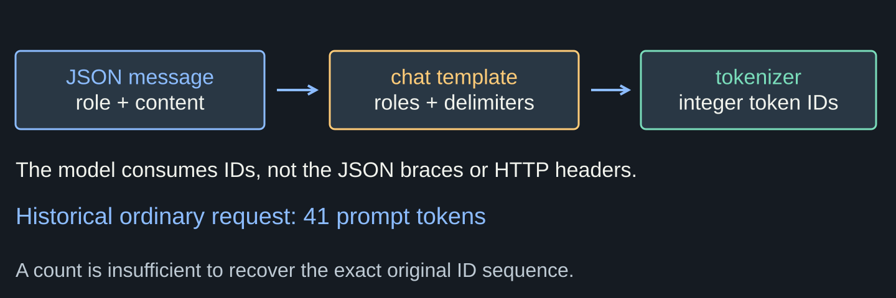
Four visible pieces become 33 input tokensЧетыре видимых куска — это 33 входных токена
Fresh v3 capture · local pinned tokenizerСвежий захват v3 · локальный токенизатор

Temperature changes the next-token distributionTemperature меняет распределение следующего токена
Invented logits [2, 1, 0] · nucleus mass = 1Выдуманные логиты [2, 1, 0] · масса nucleus = 1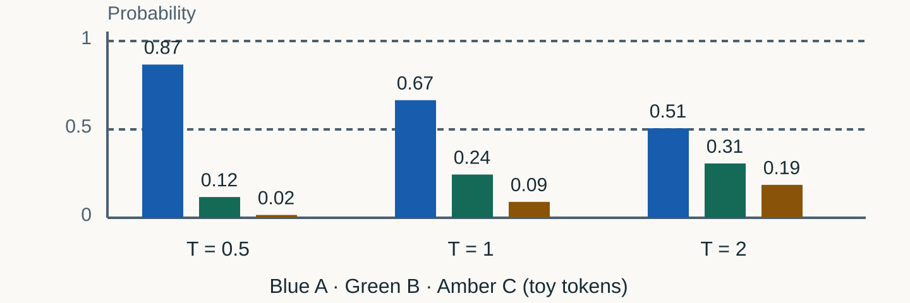
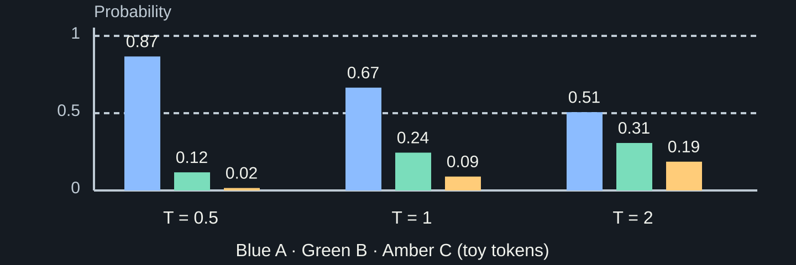
Rendered-token accountingУчёт отрендеренных токенов
Count after the chat templateСчитайте после chat-шаблонаNucleus sampling keeps a cumulative prefixNucleus sampling сохраняет кумулятивный префикс
Toy logits · T = 1 · p = 0.8Игрушечные логиты · T = 1 · p = 0.8
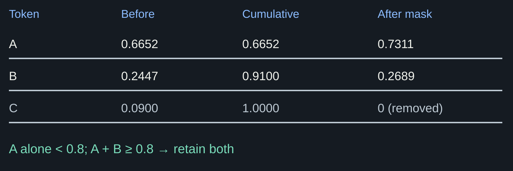
Constrained output controls syntax, not meaningОграничение вывода управляет синтаксисом, не смыслом
Prefix constraint · illustrative stringsОграничение префикса · иллюстративные строки
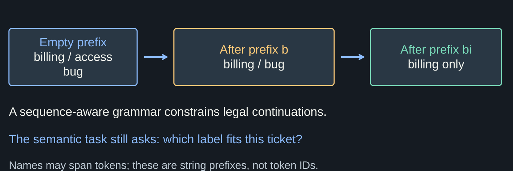
Actual label IDs and the output capРеальные ID меток и лимит вывода
Pinned Qwen tokenizer · inspect before guessingЗапиненный токенизатор Qwen · проверяйте до догадок| StringСтрока | Isolated IDОдиночный ID | What cap 1 cannot promiseЧто лимит 1 не обещает |
|---|---|---|
| billing | 38637 | first generated token is this labelпервый сгенерированный токен — эта метка |
| access | 5211 | the label is semantically correctметка семантически верна |
| bug | 2313 | a non-label prefix cannot appearпрефикс не-метки появиться не может |
Where does this request fail?
На каком слое падает этот запрос?
Pause · boundary testПауза · тест на границах/v1/models lists topic04; SDK sends model="submission"/v1/models выводит topic04; SDK шлёт model="submission"Predict the failure layer and the shortest fix. What extra test would prove that the chat template is also valid?
Предскажите слой отказа и кратчайший фикс. Какой дополнительный тест доказал бы, что chat-шаблон тоже валиден?
Request contractКонтракт запроса
Validate names, roles, token budgets and failure states.
Проверяйте имена, роли, токен-бюджеты и состояния отказа.
The exact ordinary chat requestТочный обычный chat-запрос
Historical source request · output recordedИсторический исходный запрос · выход записан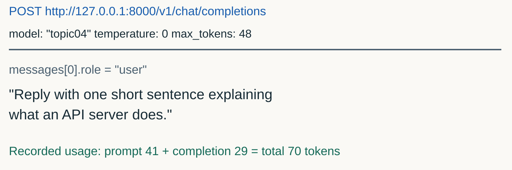
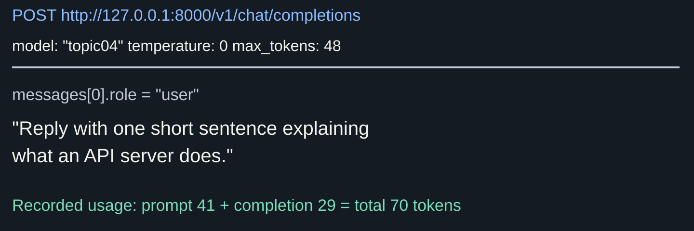
Roles change rendering, not only presentation
Роли меняют рендер, а не только оформление
Chat semanticsСемантика чатаMessage order and roles become model-specific tokens. A client that flattens everything into one user string has changed the model input and may change safety, quality and token count.
Порядок сообщений и роли становятся модельными токенами. Клиент, сплющивший всё в одну user-строку, изменил вход модели и может изменить безопасность, качество и число токенов.
Generation settings change the contractНастройки генерации меняют контракт
Explicit request values and limitsЯвные значения и лимиты запроса| SettingНастройка | Case valueЗначение в кейсе | ConsequenceСледствие |
|---|---|---|
| temperature | 0 | greedy-style selection, not cross-runtime identityвыбор в стиле greedy, не кросс-рантайм идентичность |
max_tokens | 48 ordinary; 16 raw48 обычный; 16 сырой | output cap, not promised lengthлимит выхода, не обещанная длина |
| stream | false or truefalse или true | JSON response or SSE eventsJSON-ответ или SSE-события |
| retry countчисло ретраев | 0 in smoke0 в смоуке | one recorded attempt per callодна записанная попытка на вызов |
Context overflow before generationПереполнение контекста до генерации
Measured negative requestИзмеренный отказ запросаWrite the admission guard before starting CUDAНапишите guard допуска до запуска CUDA
Student task A2 · illustrative reservationЗадача студента A2 · иллюстративный резерв| Rendered promptОтрендеренный промпт | Output capЛимит выхода | Against 2048Против 2048 |
|---|---|---|
| 33 | 16 | 49: admit49: допустить |
| 1800 | 512 | 2312: reject2312: отклонить |
| 1800 | 128 | 1928: admit1928: допустить |
| 2032 | 16 | 2048: equality fits2048: впритык — ок |
Valid labels can still be wrongВалидные метки могут быть неверными
Measured Topic03 · Transformers FP16 · T4Измерено в Topic03 · Transformers FP16 · T4![Twelve handwritten ticket cases: all twelve valid, six correct. Rows are gold billing/access/bug; columns are predicted billing/access/bug/invalid. Counts are [[0,3,1,0],[0,4,0,0],[0,2,2,0]]. This is historical Transformers evidence, not fresh vLLM quality.](assets/figures/t4-ml-confusion-light.svg)
![Twelve handwritten ticket cases: all twelve valid, six correct. Rows are gold billing/access/bug; columns are predicted billing/access/bug/invalid. Counts are [[0,3,1,0],[0,4,0,0],[0,2,2,0]]. This is historical Transformers evidence, not fresh vLLM quality.](assets/figures/t4-ml-confusion-dark.svg)
A response contains text and a completion contractОтвет содержит текст и контракт завершения
Recorded ordinary response · selected fieldsЗаписанный обычный ответ · выбранные поля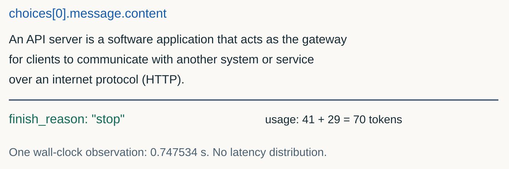
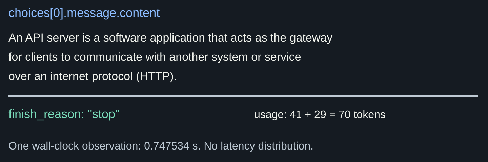
Usage may arrive after the finish eventUsage может прийти после события finish
Synthetic accounting · explicit opt-inСинтетический учёт · явный opt-in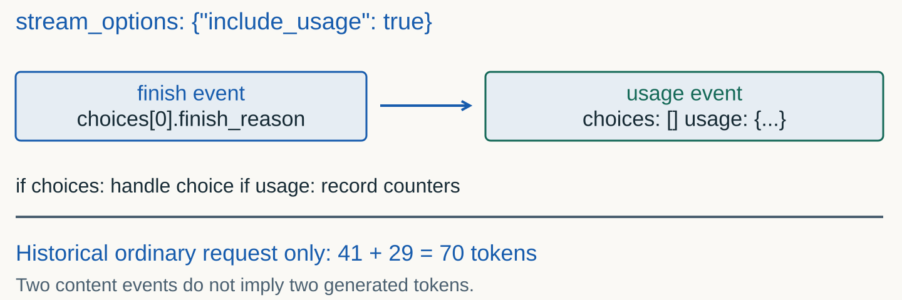
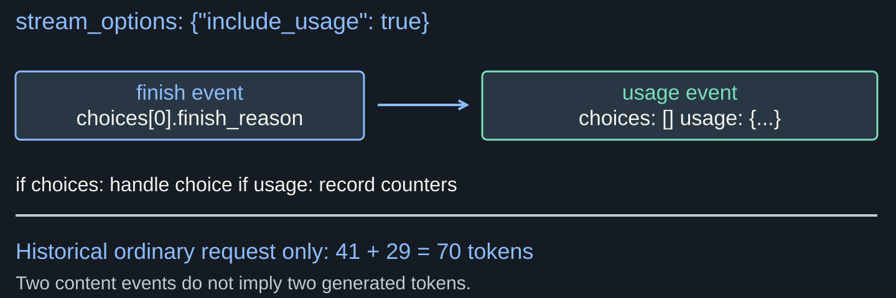
Status codes narrow the next probeКоды статусов сужают следующую пробу
Observed negatives + diagnostic hypothesesНаблюдаемые отказы + диагностические гипотезы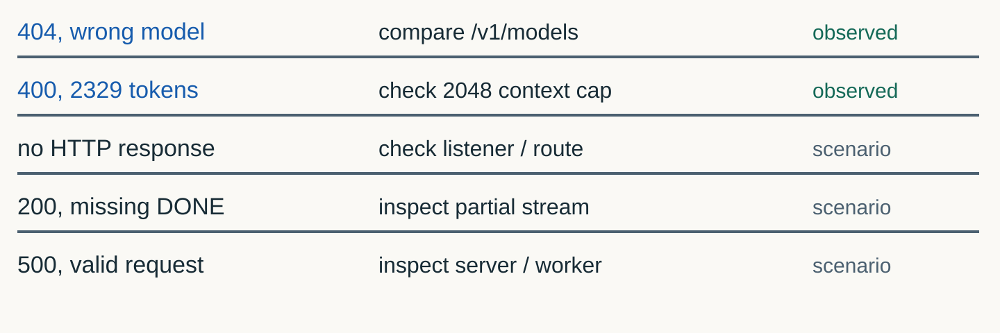
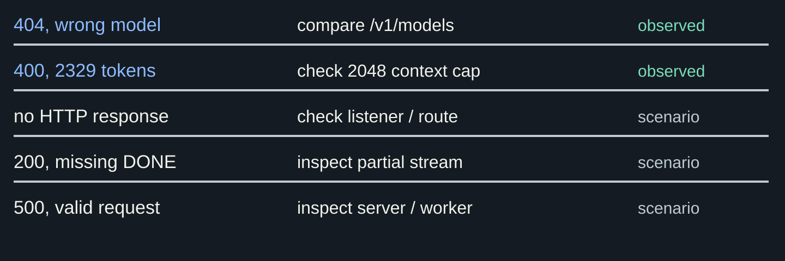
Timeouts identify clocks, not the guilty componentТаймауты указывают часы, а не виноватый компонент
Illustrative timeout policy · no host timingsПолитика таймаутов · без таймингов хоста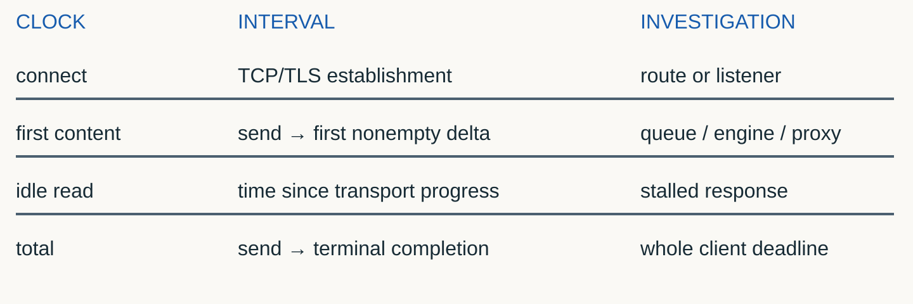
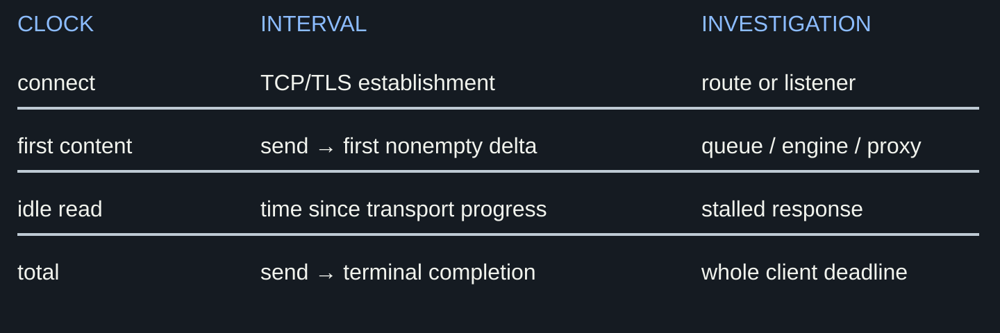
Evaluate transport, format and meaning separatelyТранспорт, формат и смысл оценивайте отдельно
Eight invented attempts · all stay in the denominatorВосемь выдуманных попыток · все в знаменателе
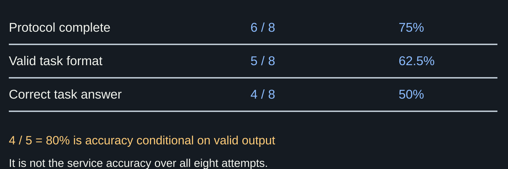
The held-out model equals a constant baselineМодель на отложенных = константный базлайн
Measured v2 · vLLM FP16 · T4 High RAMИзмерено v2 · vLLM FP16 · T4 High RAM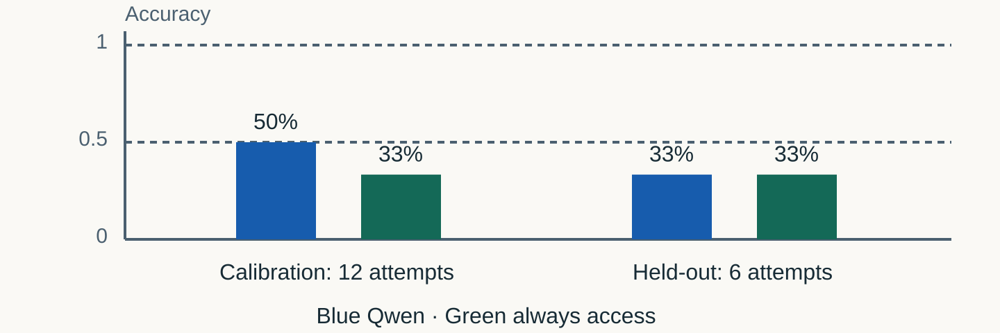

Which failure happens before the GPU?
Какой отказ случается до GPU?
Pause · classifyПауза · классификацияPut each at the earliest failing boundary. What status, log or memory observation would confirm your placement?
Поместите каждый на самую раннюю границу отказа. Какое наблюдение — статус, лог или память — подтвердило бы вашу раскладку?
StreamingСтриминг
A partial answer is not a completed request.
Частичный ответ — не завершённый запрос.
Nine text deltas form the recorded greeting9 текстовых дельт складываются в приветствие
Fresh v3 capture · client-arrival clocksСвежий захват v3 · часы прихода к клиенту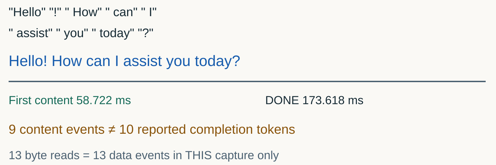

The synthetic stream has six data eventsВ синтетическом стриме шесть data-событий
Synthetic CPU fixture · invented contentСинтетическая CPU-фикстура · контент выдуман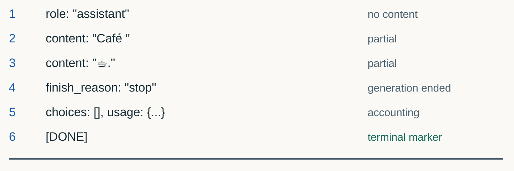
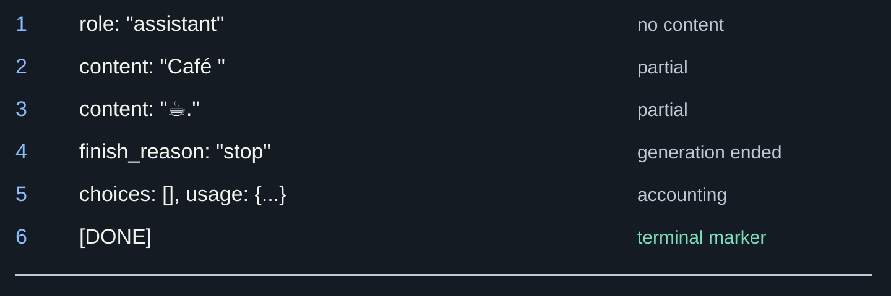
Network reads can split a characterСетевые чтения могут разрезать символ
Synthetic byte split · UTF-8 arithmeticРазрез байтов · арифметика UTF-8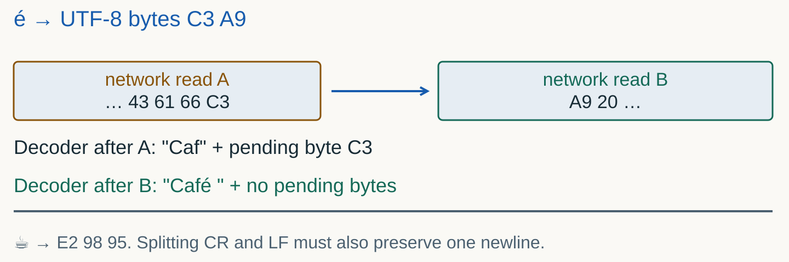
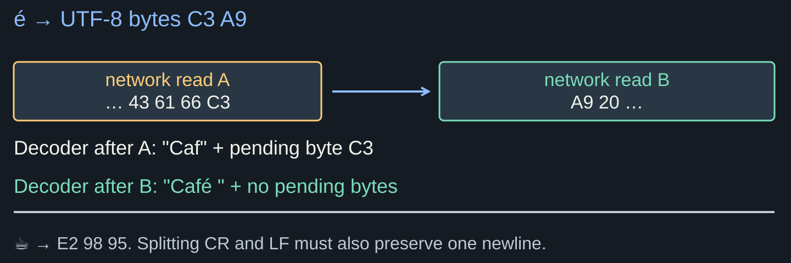
A streaming parser keeps state across readsПарсер стрима хранит состояние между чтениями
Synthetic CPU parser · processing orderСинтетический CPU-парсер · порядок обработки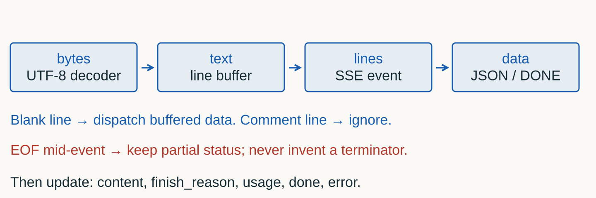
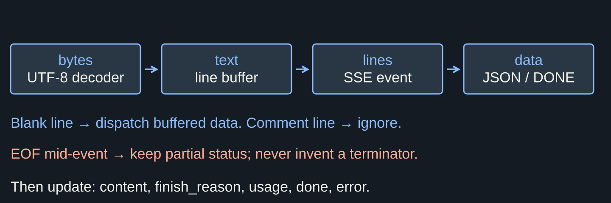
SSE line rules and incomplete inputПравила строк SSE и неполный ввод
WHATWG framingФрейминг WHATWG| InputВвод | Parser actionДействие парсера | ResultРезультат |
|---|---|---|
: heartbeat | ignore commentпропустить комментарий | no data eventнет data-события |
two data: linesдве строки data: | join with newlineсклеить переводом строки | one event on blank lineодно событие на пустой строке |
\r\n, \n or \r\r\n, \n или \r | recognize line endingраспознать окончание строки | same framingто же обрамление |
| EOF before blank lineEOF до пустой строки | discard pending eventотбросить ожидающее событие | partial completionчастичное завершение |
Finish, DONE and useful output are separate checksFinish, DONE и полезный выход — разные проверки
Synthetic completion decisionsСинтетические решения о завершении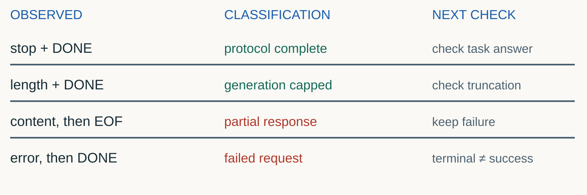

The fixture is reproducible without a serverФикстура воспроизводится без сервера
Synthetic state after each data eventСостояние после каждого data-события| EventСобытие | Accumulated textНакопленный текст | StateСостояние |
|---|---|---|
| role | emptyпусто | openоткрыт |
| content #1 | Café | partialчастично |
| content #2 | Café ☕. | partialчастично |
| finish + usage + DONEfinish + usage + DONE | Café ☕. | complete after DONEзавершено после DONE |
Reveal a complete stream and a failure point
Покажите полный стрим и точку отказа
Interactive SSE state · step with →Интерактивное состояние SSE · шаги — кнопкой →Four client timestamps answer different questionsЧетыре клиентских метки отвечают на разные вопросы
Synthetic arrivals · monotonic secondsСинтетические приходы · монотонные секунды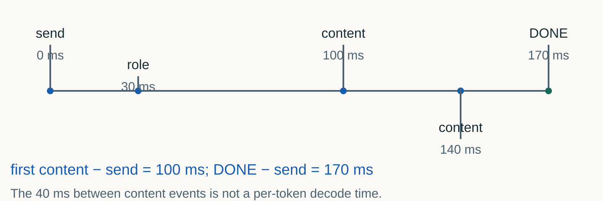
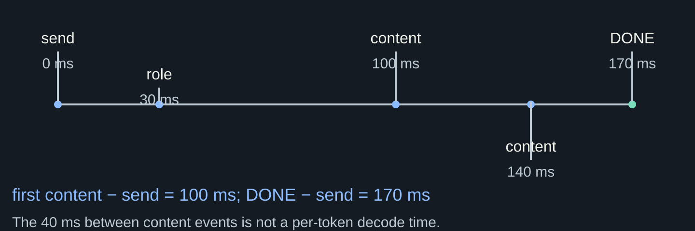
First-content time at the clientВремя первого контента у клиента
Synthetic fixture clocksЧасы синтетической фикстурыRead-size distribution, not token latencyРазмеры чтений, а не латентность токенов
Recorded v3 · 13 client readsЗаписано v3 · 13 клиентских чтений

Compare, choose, then open held-outСравнить, выбрать, потом открыть отложенные
One factor · observed decisionОдин фактор · наблюдаемое решение| StepШаг | Concrete actionКонкретное действие | Saved resultСохранённый результат |
|---|---|---|
| DeclareЗаявляем | baseline + prompt OR format changeбазлайн + изменение промпта ИЛИ формата | same model / cases / T / capта же модель / случаи / T / лимит |
| CompareСравниваем | 12 calibration tickets per policy12 калибровочных тикетов на политику | matrices, baseline, class recallsматрицы, базлайн, recall по классам |
| ChooseВыбираем | inspect observations; freeze winnerсмотрим наблюдения; фиксируем победителя | decision + hash; no test yetрешение + хэш; теста ещё нет |
| TestТестируем | six held-out tickets, selected policyшесть отложенных тикетов, выбранная политика | no retuning; bounded conclusionбез подстройки; ограниченный вывод |
Client cancellation has a server-side consequence to verifyОтмена клиентом имеет серверное последствие для проверки
Illustrative lifecycle · cancellation unmeasuredИллюстративный жизненный цикл · отмена не измерена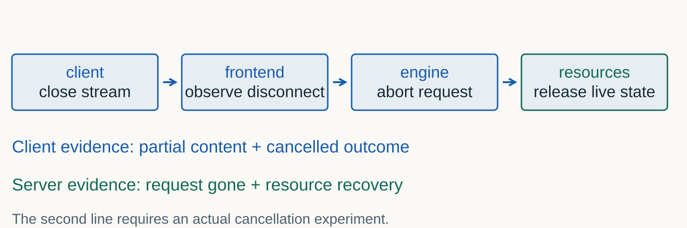
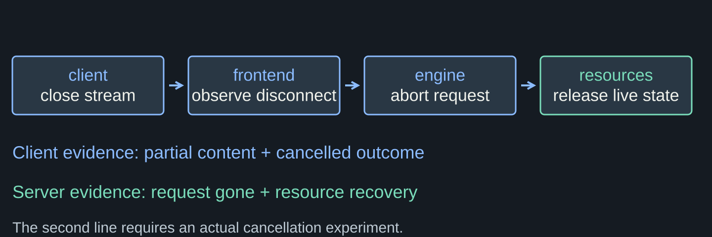
Cancellation and retry need distinct recordsОтмена и повтор требуют разных записей
Illustrative application policyИллюстративная политика приложения| AttemptПопытка | Observed contentНаблюдаемый контент | OutcomeИсход |
|---|---|---|
| A, first requestA, первый запрос | Café | user cancelsотмена пользователем |
| A, server cleanupA, уборка на сервере | not observed by parserпарсеру не наблюдаемо | must verify separatelyпроверить отдельно |
| B, optional retryB, опциональный повтор | new generationновая генерация | new attempt IDновый ID попытки |
| UI decisionРешение UI | replace or label partial Aзаменить или пометить частичный A | never append B blindlyне дописывать B вслепую |
Each attempt retains its completion stateКаждая попытка хранит своё состояние завершения
Text-only client success predicateПредикат успеха текстового клиента| ObservationНаблюдение | Client stateСостояние клиента | Metric treatmentУчёт в метрике |
|---|---|---|
| finish + DONE, no errorfinish + DONE, без ошибки | protocol completeпротокол завершён | check task acceptanceпроверить приём задачи |
| content then disconnectконтент, затем обрыв | partial answerчастичный ответ | incomplete attemptнезавершённая попытка |
| timeout before contentтаймаут до контента | failed attemptнеудачная попытка | first-content time unavailableвремя первого контента недоступно |
| error event, then DONEсобытие ошибки, затем DONE | failed generationнеудачная генерация | terminal does not erase errorтерминал не стирает ошибку |
Completion accounting across five attemptsУчёт завершений по пяти попыткам
Illustrative populationИллюстративная совокупность| OutcomeИсход | CountСчёт | Complete answersПолные ответы |
|---|---|---|
| normal stop + DONEнормальный стоп + DONE | 2 | 2 |
| length + DONElength + DONE | 1 | depends on task policyзависит от политики задачи |
| partial disconnectобрыв с частичным | 1 | 0 |
| error event + DONEсобытие ошибки + DONE | 1 | 0 |
One request: observed client event arrivalsОдин запрос: наблюдаемые приходы событий клиента
Recorded v3 · one raw requestЗаписано v3 · один сырой запрос

Would you display this answer as complete?
Показали бы вы этот ответ как полный?
Pause · partial responseПауза · частичный ответ[DONE]12 контент-дельт; соединение закрылось; нет [DONE]Classify the response and describe one client-visible fallback and one server-side metric you would inspect.
Классифицируйте ответ и опишите один видимый клиенту фоллбэк и одну серверную метрику, которую вы посмотрели бы.
CapacityЁмкость
Context, live tokens and memory determine admission.
Контекст, живые токены и память определяют допуск.
Rendered input and requested output share a context budgetОтрендеренный вход и запрошенный выход делят бюджет контекста
Measured rejection + illustrative alternativesИзмеренный отказ + иллюстративные варианты
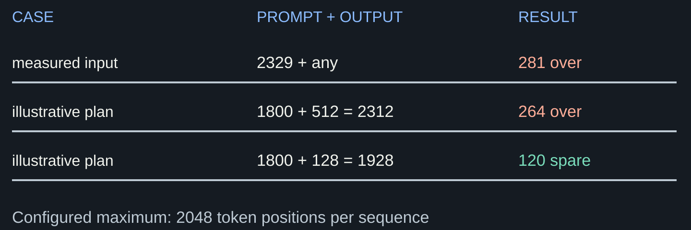
--max-model-len is a context policy--max-model-len — политика контекста
CLI flagCLI-флагChoose a value compatible with the model and available KV memory. It limits an individual request's rendered prompt plus generation; it does not reserve that length for every client.
Выберите значение, совместимое с моделью и доступной KV-памятью. Оно ограничивает отрендеренный промпт плюс генерацию одного запроса; оно не резервирует эту длину за каждым клиентом.
--gpu-memory-utilization is a budget target--gpu-memory-utilization — целевой бюджет
CLI flagCLI-флагThe lab sets 0.45 to bound this small experiment. The remaining memory is not automatically a throughput guarantee or a safe place for another uncontrolled GPU process. vLLM engine argument.
Лаба ставит 0.45, чтобы ограничить этот небольшой эксперимент. Оставшаяся память не гарантирует throughput (пропускную способность) и не является безопасным местом для ещё одного неконтролируемого GPU-процесса. Аргумент движка vLLM.
The lab model retains 12 KiB of logical KV per tokenМодель лабы хранит 12 KiB логического KV на токен
Pinned 0.5B config · payload arithmeticЗапиненный конфиг 0.5B · арифметика пейлоада

Transfer exercise: a different model and KV poolПеренос: другая модель и пул KV
Illustrative 3B-style payload boundИллюстративная граница пейлоада в стиле 3BChange clients and context; watch KV pressure
Меняйте клиентов и контекст; следите за давлением KV
Interactive logical capacityИнтерактивная логическая ёмкостьLogical payload against an illustrative 6 GiB pool; not vLLM's allocator.
Логическая нагрузка против иллюстративного пула 6 GiB; не аллокатор vLLM.
Active slots do not remove queueing
Активные слоты не отменяют очередь
Scheduler boundaryГраница шедулераActiveАктивные
Admitted requests hold live state and consume iteration work. Their token lengths vary.
Допущенные запросы держат живое состояние и потребляют работу итераций. Их токен-длины различны.
QueuedВ очереди
Additional requests wait before GPU service, increasing user-visible TTFT without changing one kernel's speed.
Дополнительные запросы ждут до сервиса на GPU, поднимая видимый пользователю TTFT и не меняя скорость одного ядра.
A model can start and later OOM
Модель может стартовать и позже поймать OOM
Workload dependenceЗависимость от нагрузкиA small idle process has room. Long prompts and more live sequences grow KV and workspace demand. Detect with request token counts, memory telemetry and admission logs; reduce limits or select a smaller candidate.
Небольшой простаивающий процесс имеет запас. Длинные промпты и больше живых последовательностей растят запросы KV и воркспейсов. Обнаруживайте по токен-счётам запросов, телеметрии памяти и логам допуска; снижайте лимиты или выбирайте меньшего кандидата.
A sequence cap is not a performance guarantee
Потолок последовательностей — не гарантия производительности
Common shortcutТипичное упрощение“--max-num-seqs 4 guarantees four requests at any context.”«--max-num-seqs 4 гарантирует четыре запроса при любом контексте.»
Which limit would you change first?
Какой лимит вы изменили бы первым?
Pause · evidence requiredПауза · нужны свидетельстваUse model size, rendered input tokens, requested output cap and free GPU memory to decide whether to lower context, concurrency or model size. What observation would reject your choice?
Размером модели, отрендеренными входными токенами, запрошенным потолком выхода и свободной GPU-памятью решите, что снижать: контекст, конкурентность или размер модели. Какое наблюдение опровергло бы ваш выбор?
Operate safelyЭксплуатируем безопасно
The model, server and cache have separate lifecycles.
У модели, сервера и кэша разные жизненные циклы.
Choose the network boundary deliberately
Сетевую границу выбирайте осознанно
Local lab versus productionЛокальная лаба против продакшена| SettingНастройка | Lab choiceВыбор лабы | Production questionВопрос продакшена |
|---|---|---|
| bind hostхост привязки | 127.0.0.1 | who can reach the API?кто достучится до API? |
| portпорт | 8000 | collision and ingress policy?коллизии и политика ingress? |
| API keyAPI-ключ | local placeholderлокальная заглушка | authn/authz and rotation?authn/authz и ротация? |
| proxyпрокси | noneнет | SSE buffering and timeouts?буферизация SSE и таймауты? |
Request logs can contain sensitive prompts
Логи запросов могут содержать чувствительные промпты
Data hygieneГигиена данныхRequest ID, model revision, token counts, status and phase times usually support triage. If raw prompts are ever logged, control access, retention and redaction explicitly.
Request ID, ревизия модели, токен-счёты, статус и времена фаз обычно хватает для разбора. Если сырые промпты когда-нибудь логируются, явно управляйте доступом, хранением и цензурой.
Failure: every clean launch downloads weights again
Отказ: каждый чистый запуск снова качает веса
Production scenario DПродакшен-сценарий DDetectОбнаружить
Startup duration scales with network transfer; logs show repeated fetch/resolve. A failed download looks like a model failure even though GPU is idle.
Длительность старта тянется за сетевым переносом; в логах повторные fetch/resolve. Упавшая загрузка выглядит как отказ модели, хотя GPU простаивает.
MitigateСмягчить
Prefetch one immutable revision, keep the model cache across runs, start from the local snapshot and fail offline if expected files are missing.
Предзагрузите одну неизменяемую ревизию, храните кэш модели между прогонами, стартуйте с локального снапшота и падайте офлайн, если ожидаемых файлов нет.
Use a bounded readiness window
Используйте ограниченное окно готовности
Operational phaseОперационная фазаThe lab allows five minutes for its small local service. The judge has a separate 45-minute startup policy for immutable student submissions. Neither timeout is a performance score by itself.
Лаба даёт пять минут своему небольшому локальному сервису. У judge отдельная 45-минутная политика старта для неизменяемых студенческих сабмитов. Ни один таймаут сам по себе не является баллом за производительность.
Capture versions with the result
Фиксируйте версии вместе с результатом
ProvenanceПроисхождение| LayerСлой | RecordЗапись |
|---|---|
| artifact | model + tokenizer immutable revisionнеизменяемая ревизия model + tokenizer |
| runtime | vLLM, Python, PyTorch, CUDA, driver |
| device | GPU name, memory, compute capabilityимя GPU, память, compute capability |
| launch | flags, cache path, served nameфлаги, путь кэша, обслуживаемое имя |
Teardown has observable acceptance checksУ останова есть проверяемые признаки успеха
One server process treeОдно дерево процессов сервера| CheckПроверка | Pass evidenceПризнак успеха | Failure actionДействие при отказе |
|---|---|---|
| owned serverсвой сервер | process tree has exitedдерево процессов завершилось | bounded terminate, then escalateограниченное завершение, затем эскалация |
| loopback portloopback-порт | no listener on owned portнет слушателя на своём порту | identify owner before restartingнайдите владельца до перезапуска |
| GPU stateсостояние GPU | baseline restoredбазлайн восстановлен | stop the next GPU taskостановите следующую GPU-задачу |
| immutable snapshotнеизменяемый снапшот | still cached and verifiedвсё ещё в кэше и проверен | reuse offline next weekпереиспользуйте офлайн на следующей неделе |
One smoke request is not a load result
Один смок-запрос — не результат нагрузочного теста
Scope warningПредупреждение об объёме“Chat works, therefore this instance supports 64 clients.”«Чат работает, значит этот инстанс держит 64 клиента.»
What survives a clean restart?
Что переживает чистый перезапуск?
Pause · state inventoryПауза · опись состоянийWhich state should be deleted, which reused, and which sanitized before sharing? Explain why a clean service process need not imply a clean model download.
Какое состояние удалить, какое переиспользовать, какое обезличить перед раздачей? Объясните, почему чистый процесс сервиса не означает чистую загрузку модели.
Prove itДокажите
A launch command plus client evidence becomes a service contract.
Команда запуска плюс клиентские свидетельства становятся сервисным контрактом.
Compare, choose, then testСравнить, выбрать, протестировать
One task · two student implementationsОдна задача · две студенческие реализации| StageЭтап | Student actionДействие студента | EvidenceСвидетельства |
|---|---|---|
| A–C | budget + all-attempt scoringбюджет + оценка всех попыток | 11 + 6 CPU checks; declare challenger11 + 6 CPU-проверок; заявляем претендента |
| D2 | compare 2 calibration policiesсравнение 2 политик калибровки | matched 12-ticket matrices + baselineсопоставленные матрицы 12 тикетов + базлайн |
| D3 | choose after observationsвыбор после наблюдений | saved decision + hashсохранённое решение + хэш |
| E–F | test selected policy; explain errorsтест выбранной политики; разбор ошибок | 6 held-out attempts; no retuning6 отложенных попыток; без подстройки |
CPU parsing and GPU smoke prove different thingsCPU-парсинг и GPU-смоук доказывают разное
Lab entry pointsТочки входа лабы| PathПуть | Runs without GPU?Работает без GPU? | EvidenceСвидетельства |
|---|---|---|
| synthetic byte replayсинтетический байт-replay | yes, standard libraryда, стандартная библиотека | UTF8/SSE/client statesсостояния UTF8/SSE/клиента |
| recorded transcript replayreplay записанной транскрипции | yesда | reinspection of one old runпересмотр старого запуска |
| fresh vLLM server smokeсмоук свежего vLLM-сервера | no, CUDA requiredнет, нужна CUDA | this deployment works nowэтот деплой работает сейчас |
| concurrency benchmarkбенчмарк конкурентности | separate later topicотдельная тема позже | load distribution and failuresраспределение нагрузки и отказы |
Three API observations belong to separate requestsТри API-наблюдения относятся к разным запросам
Recorded September smoke · single clientЗаписанный сентябрьский смоук · один клиент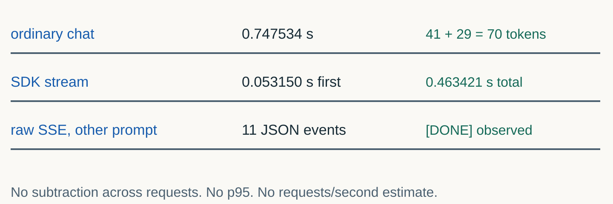
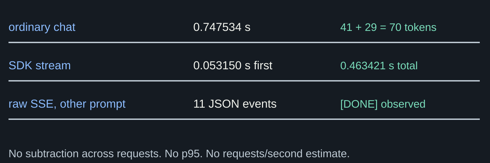
Trace a client-visible service, not an open port
Трассируйте видимый клиенту сервис, а не открытый порт
Pinned Topic 04 · step with →Запиненная тема 04 · шаги — кнопкой →topic04; wrong name → 404объявлен topic04; неверное имя → 404[DONE]12 JSON-кадров + [DONE]Single-client API smoke · sanitized evidence; no load or p95 claim.
API-смок одного клиента · обезличенные свидетельства; без заявлений о нагрузке и p95.
Keep the implementation contract versioned
Держите контракт реализации версионированным
Primary readingПервичное чтение- vLLM ·
serveCLI referencevLLM · справочникserveCLI - vLLM · online serving route and parameter supportvLLM · маршрут онлайн-сервинга и поддержка параметров
- vLLM · engine arguments and memory/context limitsvLLM · аргументы движка и лимиты памяти/контекста
- OpenAI Python SDK · client and streaming behaviorOpenAI Python SDK · поведение клиента и стриминга
- Kwon et al. · PagedAttention paperKwon et al. · статья о PagedAttention
Transfer: score every attempted ticketПеренос: оцените каждую попытку
Exit ticket · seven new attemptsВыходной тикет · семь новых попыток| OutcomeИсход | CountСчёт | MeaningСмысл |
|---|---|---|
| complete, valid, correctполностью, валидно, верно | 4 | correct predictionsверные предсказания |
| complete, valid, wrongполностью, валидно, неверно | 1 | semantic errorсемантическая ошибка |
| complete, invalid stringполностью, невалидная строка | 1 | format errorошибка формата |
| partial: correct-looking labelчастично: правдоподобная метка | 1 | not an accepted predictionне принятое предсказание |

The service contract includes identity, limits, completion, errors and a recoverable lifecycle—not just generated text.
Сервисный контракт включает идентичность, лимиты, завершение, ошибки и восстановимый жизненный цикл — не только сгенерированный текст.
Now inspect the scheduler.Теперь изучите шедулер.
Topic 05 derives PagedAttention and continuous batching: how live requests share KV memory and GPU iterations after the API admits them.
Тема 05 выводит PagedAttention и непрерывный батчинг: как живые запросы делят KV-память и GPU-итерации после допуска API.